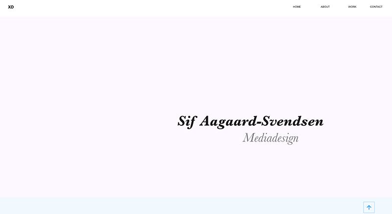

This project was my third school project, and it was about designing and creating a prototype for a mobile app.
The app had to be one of the following
Weather app
Real estate app
Sports tracker app
The app had to be designed for both mobile and tablet, contain at least three menu items and at least three levels, and it also had to have sufficient content for a user test to be possible. Furthermore, there had to be developed suggestions for interface elements such as icons for the app, created in Adobe Illustrator.
In the beginning, I chose to work on a weather app, but I soon realised that I had problems meeting the design requirement. Therefore, my final result is a sports tracker app.
From this project I learned about vector graphics using Adobe Illustrator, graphics and icons to digital interfaces, user test and data collection.
In my redesign of the mobile version, I have added a login page, settings page, and a profile page. Based on supervisor and user feedback in the first and second version, there have been added navigational elements and a redesign of the organization.
As it is a prototype, and not an actual product, I have chosen not to make the settings functional, but rather as a demonstration of the design if it were to become an actual product in the future. That is also my argument to why the links the links for creating a new user, privacy policy and the icon to show the route taken in the history section, does not work either.
Sweetbot
sweetbot
Sweetbot was my fourth school project, a case study my class was given as a group project.
Sweetbot is a small fictitious web bureau that has specialised in the following areas:
Web development
Digital security
Branding
Sweetbot wanted to implement a Danish version of their website. The website had to be optimised for mobile units, furthermore Sweetbot wished for there to be jQuery elements in the solution.
We were required to follow Sweetbots style guide and implement their logo. Additionally, was a suggestion for a logo and icons for Sweetbots recently developed e-commerce solution, HotBot, demonstrated in the online website solution and added to the style guide.
Last but not least were we to user test the site.
In my group, we decided to go with the mobile first strategy, which is why, the website looks a lot better on phones and tablets than on desktops.
From this project I learned about implementation of design guidelines, working in smaller teams and project management. It was also through this project that I was introduced to web responsive design, javascript and jQuery plugins.
I have made a small change from my group’s original solution, based on the user test, which had some confusion on the section about Sweetbot called "Vores Sweetbot".

Portfolio development
Portfolio development
The portfolio development project had three parts
Dream your portfolio is the first part and was the first school project. It had a simple design brief; create a sketch of how I, at the time, imagined my portfolio should look like and create a prototype of it. The result can be seen using the prototype icon.
From this project I learned about prototyping and Adobe XD.
Build your portfolio is the second part and was the second school project. This was about creating the portfolio as a website, developed from scratch using HTML 5 and CSS 3. I had to produce an online version and document my code and project structure at GitHub. The result can be seen using the web icon.
From this project I learned about coding with HTML 5, CSS 3, validating my code and FTP upload to my own domain using Adobe Dreamweaver. I also learned about proper web project structure, web optimising photos and using GitHub.
1st term exam project the final part and the fifth school project. combined all of my obtained skills and knowledge from the first four school projects in order to redesign my portfolio and update the previous projects based on the various feedback throughout the course. My report from this project can be seen using the documentation icon.
The exam project has improved my knowledge and boosted my confidence in relation to the skills that I have obtained during this term, and it has also helped me discover which areas that require more elaborate work going forward.